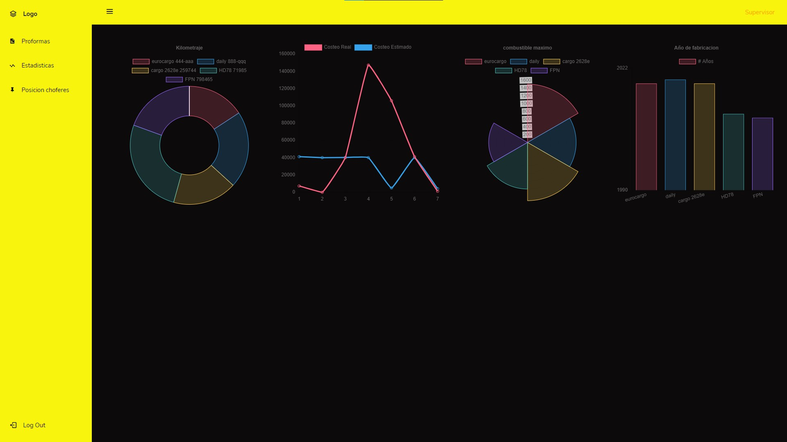

Transportes La Matanza
Transportes La Matanza se creo con el modelo MVC, y cuenta con 4 niveles de acceso:
-El chofer que utilizará el sistema para actualizar los datos durante el viaje
-El supervisor que realizará las tareas de carga y consulta de los datos
-El encargado del taller quien actualizará los datos de mantenimiento
-El administrador, encargado de administrar el sistema, trabajar con los reportes de nivel gerencial y realizar la carga de roles y usuarios.
Se utilizaron las siguientes librerías:
-cartJs para la creación de los graficos
-DomPdf para crear pdf
-PHPMailer para enviar emails
-PHPQrCode para crear qrs.